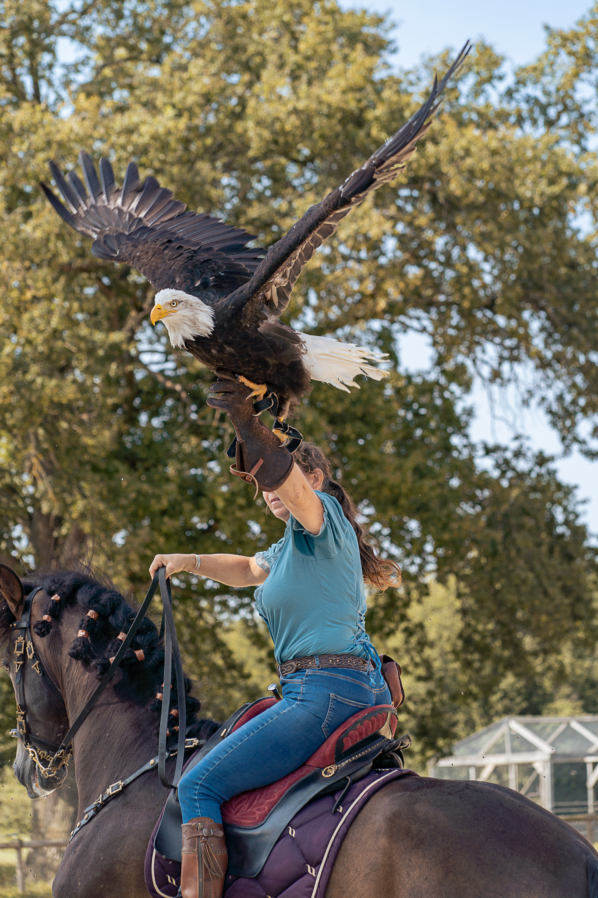

Resources → Getting Started
Falconry Apprenticeship: 30 Questions to Ask Your Sponsor
Choosing a sponsor is one of the most important decisions in your falconry journey. The right sponsor teaches you to be a competent, ethical falconer. The wrong one can create bad habits, legal problems, or a miserable experience. These questions help you evaluate potential sponsors and find the right match.
Experience & Background
Understanding your potential sponsor's background helps you gauge their knowledge and teaching ability.
- What permit level do you hold, and how long have you been at that level? — General or Master class is required to sponsor in most states. More experience generally means better mentorship, but some newer General falconers are excellent teachers.
- How many apprentices have you sponsored before? — First-time sponsors can be great, but experienced ones have refined their teaching approach.
- What happened with your previous apprentices? — Did they upgrade to General? Are they still active? A track record of successful apprentices is a strong positive signal.
- What species do you currently fly? — Active hunting falconers make the best sponsors because you learn by doing, not just talking.
- Are you a member of any falconry clubs or NAFA? — Club membership shows engagement with the broader falconry community and provides you additional networking opportunities.
Expectations & Commitment
Clear expectations prevent misunderstandings and frustration on both sides.
- What do you expect from an apprentice? — Some sponsors want you in the field every weekend. Others are more hands-off. Make sure expectations align with your availability.
- How often will we meet or go afield together? — Weekly contact is ideal during the first season. Monthly is the minimum for a productive apprenticeship.
- How long do you typically sponsor someone before they upgrade? — The legal minimum is 2 years in most states, but some apprenticeships run 3–4 years.
- Will you help me study for the falconry exam? — Most states require passing a written exam. A good sponsor provides study resources and quizzes you on material.
- Do you expect me to have all my equipment before trapping? — Yes is the correct answer. Your mews, perch, and all equipment should be ready and inspected before you acquire a bird.
- Will you inspect my mews before I trap? — A responsible sponsor always inspects housing before approving a bird acquisition.
Logistics & Availability
Practical considerations matter. A sponsor 3 hours away is less useful than one 30 minutes away.
- How far away do you live from me? — Closer is better. You will be meeting frequently, especially during the critical first weeks with a new bird.
- Are you available by phone or text for urgent questions? — Birds do not wait for business hours. A sick bird at 9 PM needs advice now, not tomorrow.
- Do you have a raptor vet you recommend? — Every sponsor should know at least one avian vet experienced with raptors.
- Where do you typically hunt? — Knowing their hunting grounds tells you what terrain and quarry you will encounter.
- Can I come along on your hunts before committing? — A good sponsor welcomes this. It lets both of you evaluate the fit before formalizing the sponsorship.
Species & Training
Your first bird sets the foundation for your entire falconry career.
- What species do you recommend for my first bird? — In most states, apprentices are limited to Red-tailed Hawks or American Kestrels. Red-tails are the standard recommendation: tough, forgiving, and excellent hunters.
- Will you help me trap my first bird? — Trapping requires technique and timing. An experienced sponsor makes the process safer and more efficient.
- What quarry will we hunt with my bird? — Red-tails typically hunt rabbits and squirrels. Knowing the target quarry helps you prepare and find appropriate hunting grounds.
- What training method do you use? — Manning, creance training, and lure work are standard. Be wary of sponsors who advocate extreme weight reduction or harsh methods.
- How do you approach weight management? — This is the most critical management skill. Your sponsor should explain flying weight, fat weight, and how to find the right balance for your individual bird.
- What happens if my bird gets sick or injured? — The answer should involve a vet visit, not home remedies for serious conditions.
Philosophy & Approach
Falconry philosophy varies. Make sure your sponsor's approach resonates with you.
- How do you feel about releasing the apprentice bird at the end of the season? — Most apprentice red-tails are released after the first season. This is normal and healthy. A sponsor who insists you keep a bird you are not ready for is a concern.
- What is your stance on captive-bred vs. wild-caught birds? — Both are valid. Sponsors who exclusively push expensive captive-bred birds on apprentices may have financial motives.
- How do you handle disagreements about bird care? — A sponsor who cannot handle respectful questions is a red flag. You should feel comfortable asking "why" without fear of retaliation.
- What books do you recommend? — "The Compleat Falconer" by Frank Beebe, "A Rage for Falcons" by Stephen Bodio, and "North American Falconry and Hunting Hawks" are common recommendations. A sponsor who does not read is a concern.
- Do you participate in field meets? — Field meets are where the falconry community comes together. Sponsors who attend expose you to diverse perspectives and techniques.
- What is the most important lesson you have learned in falconry? — This open-ended question reveals character, humility, and depth of experience.
- Have you ever lost a bird? What happened? — Honest sponsors share their failures. Everyone who has flown birds long enough has lost one. How they handled it matters more than the event itself.
- Why do you sponsor apprentices? — The best answer is some version of "to give back to the sport." Be cautious of sponsors who seem to want free labor or someone to admire them.
Red Flags to Watch For
- Refuses to let you observe a hunt first — If they will not let you see their operation before committing, something may be off.
- Pressures you to buy an expensive captive-bred bird — Apprentices should start with a trapped passage red-tail in most cases.
- Has no active birds — A sponsor who is not currently flying is out of practice. You need someone active in the field.
- Dismisses questions — "Just do what I say" is not mentorship. You should understand the reasoning behind every decision.
- No other falconers know them — If they are unknown in the local falconry community, investigate why.
- Charges money for sponsorship — Legitimate sponsors do not charge fees. Sponsorship is a community service, not a business.
- Excessive bird collection — A sponsor with 15 birds and no time to fly them has different priorities than training an apprentice.
Find a Falconry Sponsor
Browse verified mentors and sponsors in our directory. Filter by state to find sponsors near you.
Browse Sponsors